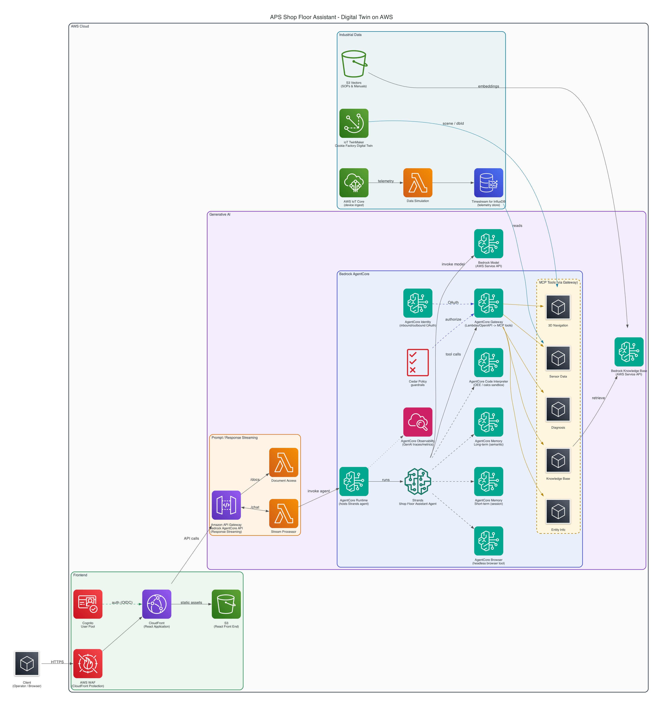

A plant-floor digital twin that overlays live IoT telemetry on an Autodesk Platform Services model, stores it in Amazon Timestream for InfluxDB, and lets operators ask questions in plain language through an Amazon Bedrock AgentCore agent grounded in the live data.
Manufacturers run capital-intensive lines where a single hour of unplanned downtime is expensive — yet the people who could prevent it are working blind:
Faults are noticed after they cascade, not as they emerge. Mean-time-to-detect is dominated by humans reading dashboards.
Sensor historians, the CAD/BIM model, and maintenance records live in separate systems that never talk to each other.
A tag named TT-1147 means nothing on the floor. Operators can't see where a reading is or what equipment it belongs to.
Bind live telemetry to the 3D model so every reading has a place and a piece of equipment behind it, then put a Gen-AI assistant on top so an operator can ask “why is Welding Bay in alarm?” and get a grounded answer plus the matching fix procedure — without leaving the model.

Edge sensors → AWS IoT Core → Data Simulation Lambda → Amazon Timestream for InfluxDB → API Gateway → Bedrock AgentCore (Strands agent + MCP tools) → APS Viewer + Gen-AI chat.
8086.The demo ships with a scripted guided tour (the ▶ Start guided demo button). Run it as follows:
To improvise, use ⚡ Trigger incident to live-ramp any zone from warning to alarm over ~15 seconds, and the time slider to scrub the last 24 hours.
Honest note: in this demo the 3D scene and telemetry are simulated stand-ins — a Three.js plant floor and locally generated sensor data — so the booth demo is credential-free and reliable. In production, swap in the real APS Viewer + Data Visualization (IoT) Extension and a data adapter reading from API Gateway → Timestream for InfluxDB. The AgentCore chat path is already real: set the runtime ARN and it calls your deployed agent.
Managed InfluxDB 2.x — Telegraf, client libraries, Flux/InfluxQL, and dashboards work unchanged.
Single-digit-millisecond queries over high-cardinality time series — ideal for a live plant-floor twin.
Automated backups, upgrades, and Multi-AZ replication; db.influx instance classes.